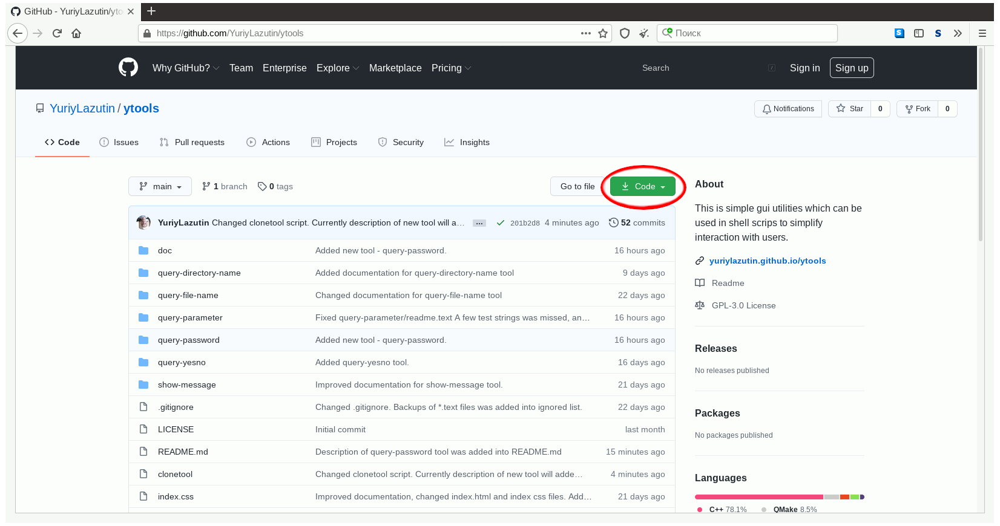

Installing a set of utilities "YTools" is a fairly simple process and does not require any special skills. You should to do following steps:
- Download YTools
- Set up an installation parameters (optional)
- Run installation
Download YTools:
Initially you should download YTools sources. You can download the zip archive directly from github or you can use terminal and command line to clone unpacked sources.
Download the zip archive directly from github
- Open your web browser and go to https://github.com/YuriyLazutin/ytools.
- Click on "Code" button, and then on "Download ZIP".
- Store the archive on your HOME/Downloads directory.
 - After downloads has completed you should unpack ytools-main.zip archive. To do this, please use your favorite archive tool, or use following command:
unzip ytools-main.zip - As a result "ytools-main" directory with YTools sources will created.
Download using terminal and command line
- Run your favorite terminal.
- Input the following command:
git clone "https://github.com/YuriyLazutin/ytools.git" - As a result "ytools" directory with YTools sources will created.
Precompile customization:
This step is optional, however you may want to change some of the installation settings of YTools. You can changing:
- the target directory for installing the utilities
- the directory with shortcuts
- the prefix of the utilities
Target directory
YTools utilities will copied into this directory. By default target directory (or YTOOLS_HOME) is "/opt/ytools". If you want you can change this target. To do this follow the steps:- Change the current directory to YTools sources location (${HOME}/Downloads/ytools-main or ${HOME}/Downloads/ytools)
- Open the install script in your favorite text editor
- Change the value of YTOOLS_HOME environment variable
- Save the install script
Shortcuts directory
Usually programs from /opt directory is not included into users $PATH environment variable, so you cannot use it just printed his names. YTools programs is not included into $PATH, but during installation we will create a symbolic links in directory which included into users $PATH. By default this directory is "/usr/local/bin". If you want you can change this location. Just do following steps:- Change the current directory to YTools sources location (${HOME}/Downloads/ytools-main or ${HOME}/Downloads/ytools)
- Open the install script in your favorite text editor
- Change the value of LBIN environment variable
- Save the install script
YTools prefix
Initially YTools utilities uses a short names of each utility. To avoid conflicts with other programs, a prefix is added to the name of each utility. For example, the utility is initially named "show-message", but after installation it will be named "${PREFIX}show-message". By default prefix is "ytools-", i.e. "show-message" tool will finally called "ytools-show-message". If you are not afraid of conflict situations, you can remove the prefix or change it to one of you like. To do this follow the steps:- Change the current directory to YTools sources location (${HOME}/Downloads/ytools-main or ${HOME}/Downloads/ytools)
- Open the install script in your favorite text editor
- Change the value of YTOOLS_PREFIX environment variable (set up YTOOLS_PREFIX="" if you want to remove it)
- Save the install script
Compiling and installation:
All required modifications already done. Just change the current directory to YTools sources location (${HOME}/Downloads/ytools-main or ${HOME}/Downloads/ytools) and execute install script.
./install
Enjoy!